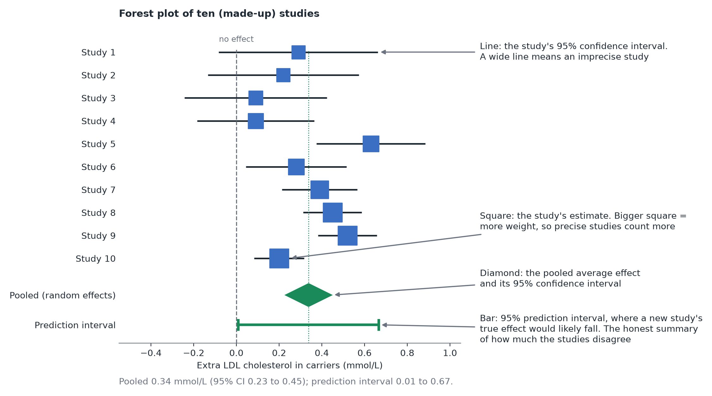

Meta-analysis
In plain terms: a meta-analysis combines the estimates from several studies of the same question into one answer, giving more weight to the more precise studies, and tells you how much the studies disagree. It is statistics where each "observation" is a whole study.
Why combine studies at all
Mia is not the only person studying her LDLR variant: ten studies have been published, each in a different clinic or population and each with its own estimate of the variant's effect on LDL cholesterol. Some found a clear association, some found little, one found nothing. Looking at which studies were "significant" is a poor way to summarize them (small trials are often non-significant even when the effect is real, see Sample size and power). A meta-analysis instead asks two better questions: what is the average effect, and how much does it vary from study to study?
What goes in: one effect and one standard error per study
Each study contributes a row: an effect estimate and its standard error (how uncertain that estimate is). All studies must measure the effect on the same scale, for example the difference in mean LDL cholesterol in mmol/L, or a standardized effect when the studies used different instruments (see Effect size). For yes/no outcomes, the usual scale is the log odds ratio or log risk ratio. You pool estimates, never p-values and never "significant / not significant" verdicts.
The core idea: weight by precision
The pooled estimate is a weighted average, and each study's weight is the inverse of its variance:
weight = 1 / (standard error² + τ²)
A big, precise trial counts for more than a small, noisy one. The extra term τ² (explained next) is zero in the simplest version of the model.
Common effect or random effects
- Common-effect ("fixed-effect") model: assumes there is one true effect and every study differs from it only by chance. The pooled estimate answers "what is that one effect?". Reasonable for near-identical replications (the same protocol run in several labs).
- Random-effects model: assumes every study has its own true effect (different ancestry, diet, age mix, assay, population), and these true effects scatter around an average with spread τ. The pooled estimate answers "what is the average effect across settings like these?". Because the interval includes the between-study differences, it is wider and more honest.
In the life sciences, studies almost never are exact replications, so random effects is the sensible default. Choose the model because of what you believe about the studies, not because one gives a smaller p-value.
How much do the studies disagree? (heterogeneity)
- τ (tau): the standard deviation of the true effects, in the same units as the effect. "τ = 0.7 kg" means true effects typically differ by about 0.7 kg from the average.
- I²: the share of the variability among the estimates that reflects real differences rather than chance. Roughly, 25% is low, 50% moderate, 75% high; these labels are conventions, not rules. I² also grows with study size, so it can look high for precise studies even when the differences are small in practical terms: read it together with τ.
- Prediction interval: the range in which the true effect of a new study would be expected to fall. This is often the most useful single number: a pooled mean of 0.34 mmol/L with a prediction interval from 0 to 0.7 mmol/L tells a very different story from the same mean with an interval from 0.3 to 0.4 mmol/L. Report it alongside the confidence interval of the mean. It needs several studies to be believable.
The forest plot
The standard picture: one row per study (a square for its estimate, sized by weight, and a line for its interval), and a diamond at the bottom for the pooled estimate. Look at it before reading any number. If the intervals barely overlap, or one study sits far from the rest, the pooled average may describe nobody.

Where this fits in this module
A random-effects meta-analysis is a multilevel model with studies as the clusters: each study's estimate is pulled ("shrunk") toward the overall average, and the noisier the study, the more it is pulled. See Clustered and hierarchical data. With few studies, a Bayesian version is often more stable, because it lets you state how large you think the between-study differences could plausibly be.
Before relying on a pooled number, read Meta-analysis: bias and pitfalls: a meta-analysis is only as good as the studies it collects and the way they were collected.